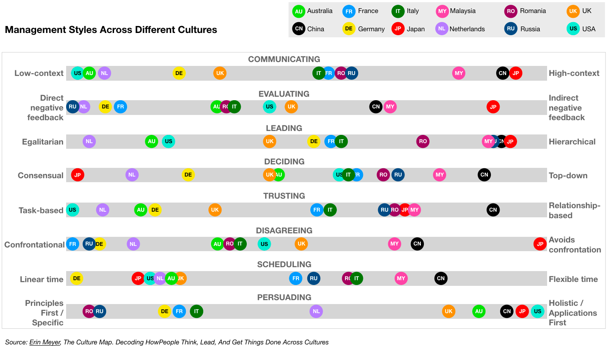
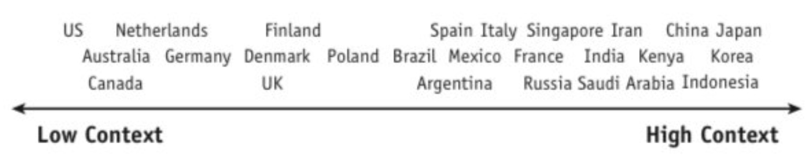
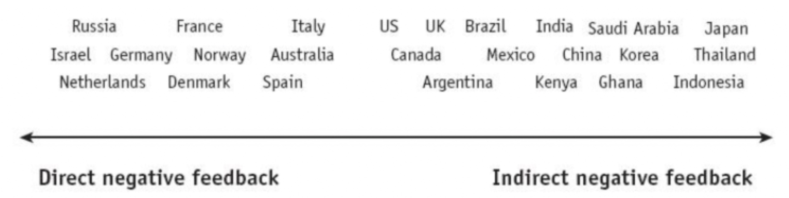
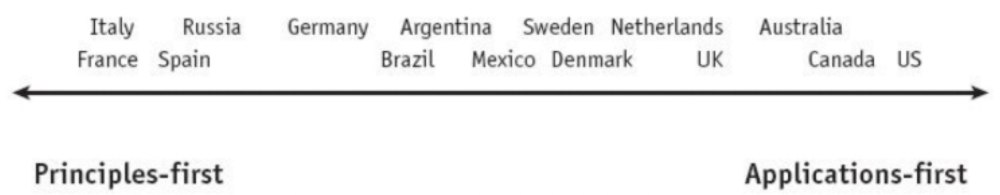
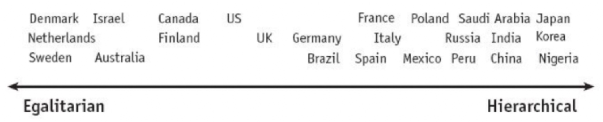
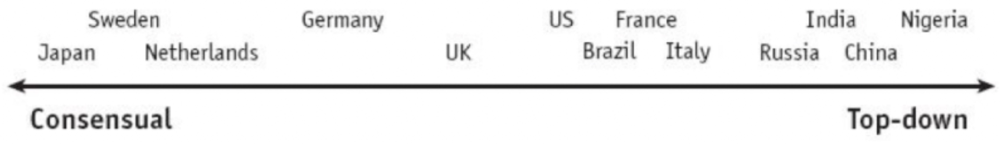
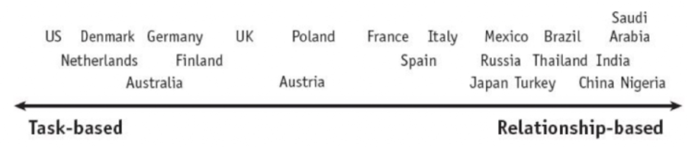
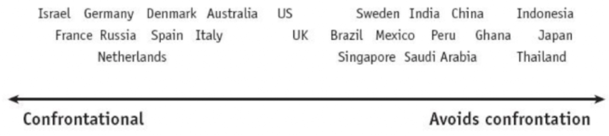
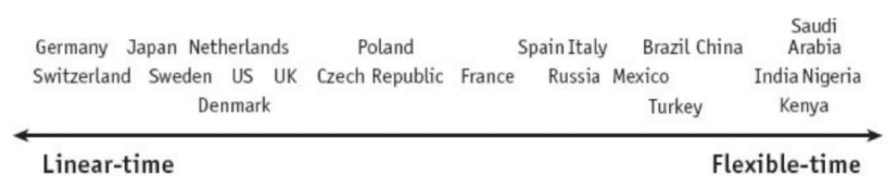

The Culture Map: Architects' Culture Mindfield Compass
KEY POINTS:
- I have found the work of Erin Meyer, The Culture Map, to be a very helpful tool for architects to work harmoniously with people from a broad array of different cultures and backgrounds.
- Meyer’s model contains eight scales, each representing a key area, showing how cultures vary from extreme to extreme: Communicating, Evaluating, Persuading, Leading, Deciding, Trusting, Disagreeing, and Scheduling.
In multinational organizations, architects will need to work with many different cultures. I have found the work of Erin Meyer, The Culture Map, to be a very helpful tool for architects to work harmoniously with people from a broad array of different cultures and backgrounds.
Meyer’s model contains eight scales, each representing a key area, showing how cultures vary from extreme to extreme. The eight scales describe a continuum between the two ends which are diametric opposite or competing positions:
- Communicating – Are cultures low-context (simple, verbose, and clear), or high-context (rich deep meaning in interactions)?
- Evaluating – When giving negative feedback, does one give it directly or prefer being indirect and discreet?
- Persuading – Do people like to hear specific cases and examples or prefer detailed holistic explanations?
- Leading – Are people in groups egalitarian or prefer hierarchy?
- Deciding – Are decisions made in consensus or made top-down?
- Trusting – Do people base trust on how well they know each other or how well they work together?
- Disagreeing – Are disagreements tackled directly, or do people prefer to avoid confrontations?
- Scheduling – Do people perceive time as absolute linear points or consider it a flexible range?
Based on surveys and interviews, the Culture Map shows positions along these eight scales for many countries. These profiles reflect, of course, the value systems of a society at large, not those of all the individuals in it, so if you plot yourself on the map, you might find that some of your preferences differ from those of your culture.

1. Communicating
Architects need to be good communicators. But what do we mean when saying someone is a good communicator? The responses differ wildly from society to society.
Meyer compares cultures along the Communicating scale by measuring the degree to which they are high- or low-context, a metric developed by the American anthropologist Edward Hall.
In low-context cultures, good communication is precise, simple, explicit, and clear. People take messages at face value. Repetition, clarification, and putting messages in writing are appreciated.
In high-context cultures, communication is sophisticated, nuanced, and layered. Statements are often not plainly stated but implied. People put less in writing, more is left open to interpretation, and understanding may depend on reading between the lines.
Architects should be able to understand and adapt to different communication styles. But when communicating, they should be able to provide low-context explanations to diverse audiences. They are bridging different cultures and domains (technology, business, domain, organization).

2. Evaluating
Architects need to provide constructive criticism of the plans and ideas of others. All cultures believe that people should give criticism constructively, but the definition of “constructive” varies greatly.
The Evaluating scale measures a preference for frank versus diplomatic negative feedback. Evaluating is different that the Communicating scale and many countries have different positions on the two scales. The French, for example, are high-context (implicit) communicators relative to Americans. Yet they are more direct in their criticism. Spaniards and Mexicans are at the same context level, but the Spanish is much franker when providing negative feedback.

3. Persuading
Architects frequently need to persuade others. How you influence others and the arguments you find convincing are deeply rooted in culture’s philosophical, religious, and educational assumptions and attitudes.
One way to compare countries along this scale is to assess how they balance holistic and specific thought patterns. Typically, a Western executive will break down an argument into a sequence of distinct components (specific thinking). At the same time, Asian managers tend to show how the pieces all fit together (holistic thinking). Beyond that, people from southern European and Germanic cultures tend to find deductive arguments (principles-first arguments) most persuasive. In contrast, American and British managers are more likely to be influenced by inductive logic (applications-first logic).

4. Leading
Architects have informal and sometimes formal authority. The leading scale measures the degree of respect and deference shown to authority figures, placing countries on a spectrum from egalitarian to hierarchical.

5. Deciding
Architectural work is about making decisions. The Deciding measures the degree to which a culture is consensus-minded.
We often assume that the most egalitarian cultures will be the most democratic, while the most hierarchical ones will allow the boss to make unilateral decisions. But this is not always the case. Germans are more hierarchical than Americans but more likely than their U.S. colleagues to build group agreements before making decisions. The Japanese are both strongly hierarchical and strongly consensus-minded.

6. Trusting
Architects need to build trust with multiple stakeholders. The culture map scale defines two extremes; task-based cognitive trust (from the head) and relationship-based affective trust (from the heart).
In task-based cultures, trust is built cognitively through work. We feel mutual trust if we collaborate well, prove ourselves reliable, and respect one another’s contributions.
In a relationship-based society, trust results from weaving a solid affective connection. We establish trust if we spend time laughing and relaxing together, get to know one another personally, and feel a mutual liking.

7. Disagreeing
Architectural work may lead to many disagreements and conflicts. Different cultures have very different ideas about how productive confrontation is for a team or an organization. This scale measures tolerance for open debate and inclination to see it as either helpful or harmful to collegial relationships.

8. Scheduling
Architects will need to participate in many meeting and projects. All businesses follow agendas and timetables, but in some cultures, people strictly adhere to the schedule. In others, they treat it as a suggestion. This scale assesses how much people value operating in a structured, linear fashion versus being flexible and reactive. This scale is based on the “monochronic” and “polychronic” distinction formalized by Edward Hall.

Rules
I also found Erin Meyer’s four rules on how to bridge the cultural gaps:
- Rule 1: Don’t Underestimate the Challenge. It’s not always easy to bridge cultural gaps. Management styles stem from habits developed over a lifetime, which makes them hard to change.
- Rule 2: Apply Multiple Perspectives. Where a culture falls on a scale doesn’t in itself mean anything. What matters is the position of one country relative to another.
- Rule 3: Find the Positive in Other Approaches. People tend to see the negative when looking at how other cultures work. But if you understand how people from varied backgrounds behave, you can turn differences into the most significant assets.
- Rule 4: Adjust and Readjust, Your Position. It’s not enough to shift to a new position on a single scale; you’ll need to widen your comfort zone to move more fluidly back and forth along all eight.
To Probe Further
- The Culture Map: Decoding How People Think, Lead, and Get Things Done Across Cultures, by Erin Meyer, 2014
- Navigating the Cultural Minefield, by Erin Meyer, Harvard Business Review, 2014
- Increase Your Team’s Performance with The Culture Map, by Andreea, 2019
- The Culture Map Lecture Notes, 2023
Guiding Principles ← Curisity, Doubt, Vision, Scepticism: Architect's Personal Compass |
Summary Summary → |